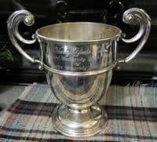
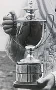

Yachting Varsity Trophy - The Queenborough Cup - On loan to CUYC
Early Oxford Cambridge Yachting Varsity Match History
A complete set of Oxford Cambridge yachting Varsity Match history and BUSA Yachting Championships results to date is tabled below, including BUSA Match Racing. The first Oxford Cambridge yachting Varsity Match was sailed in November 2003 but, to avoid an apparent missing year, this is treated as 2004 because the Match was moved to March/April from 2005 onwards – to just before the BUSA Yachting Championships. Because of the close conjunction of events, the BUSA results are also listed here for both Universities.
The first BUSA Yachting Championships were held in 1994. Previous to that date a Universities Yachting event, for the Young Cup, had been organised in 6 Metres (pre War from 1933) and Dragons (post War until 1970) on the Gare Loch by the Mudhook YC. The Varsity and BUSA Yachting events take place at Portsmouth, using Sunsail facilities. Oxford competed in the first (1994) event, but then did not compete again until 2002.

The Young Cup - in Cambridge hands 1964
Trophies and Blues
The trophy for the Yachting Varsity Match is the Queenborough Cup, presented to the CUCrC in 1950 by the Royal Thames Yacht Club and re-purposed for the Yachting Match in 2003. Half Blues (subject to good BUSA Yachting performance) have been awarded since 2008 (Oxford) and 2014 (Cambridge).
Young Cup
In the Young Cup event the winning 1949 Oxford team was Martin Beale, John Burgess, and Ann Barnard (who agreed to become Mrs Beale on the way home!). The winning 1964 Cambridge team was Anthony Butler, John Grayburn, and Jan Matthews. All the years listed below are calendar years.
The overall score in the Oxford Cambridge yachting Varsity Match history now stands at Oxford 8 wins, Cambridge 8 wins.
| Year | Yachting Varsity Winner | Oxford BUSA Position | Cambridge BUSA Position | BUSA Match Racing |
|---|---|---|---|---|
| 2022 (18th Match) | - | - | - | - |
| 2020-21 | COVID | COVID | COVID | COVID |
| 2019 | Cambridge | 2nd (Trophy Fleet) | 4th (Trophy Fleet) | DNC |
| 2018 | Oxford | 9th | 23rd | 17th (Camb) |
| 2017 | Cambridge | 15th | DNC | QF (Camb) |
| 2016 | Oxford | 17th | 21st | - |
| 2015 | Cambridge | 2nd | 3rd | - |
| 2014 | Cambridge | 15th | 4th & 8th | - |
| 2013 (10th Match) | Cambridge | 10th | 2nd | 7th (Camb) |
| 2012 | Oxford | 15th | 13th | - |
| 2011 | Oxford | 12th | 25th | - |
| 2010 | Cambridge | 18th | 26th | - |
| 2009 | Oxford | 18th & 33rd | 27th | - |
| 2008 | Cambridge | 21st | 6th | - |
| 2007 | Oxford | 12th | 7th | 3rd (Camb) |
| 2006 | Oxford | 23rd | 2nd & 11th | - |
| 2005 | Cambridge | 5th & 18th | 8th | - |
| 2004 (Held Nov 2003) | Oxford | 11th | 7th | 5th (Camb) |
| 2003 | - | 9th & 20th | 13th | 5th (Oxf) |
| 2002 | - | 10th | 5th | 3rd (Oxf) |
| 1994 (First BUSA Yachting Event) | - | 6th | DNC | - |
| 1964 (Young Cup) | - | - | 1st | - |
| 1963 (Young Cup) | - | - | Unplaced | - |
| 1962 (Young Cup) | - | - | 5th | - |
| 1961 (Young Cup) | - | - | 2nd | - |
| 1960 (Young Cup) | - | - | 4th | - |
| 1954 (Young Cup) | - | - | 3rd | - |
| 1949 (Young Cup) | - | 1st | DNC | - |
| 1948 (Young Cup) | - | 2nd | DNC | - |
| 1947 (Young Cup) | - | 3rd | DNC | - |
| 1939 (Young Cup) | - | - | 4th | - |
| 1938 (Young Cup) | - | 1st | Unplaced | - |
| 1937 (Young Cup) | - | 1st | 2nd | - |
| 1936 (Young Cup) | - | 1st | 6th | - |
| 1935 (Young Cup) | - | 1st | 4th | - |
| 1934 (Young Cup) | - | DNC | 2nd | - |
| 1933 (Young Cup) | - | DNC | DNC | - |